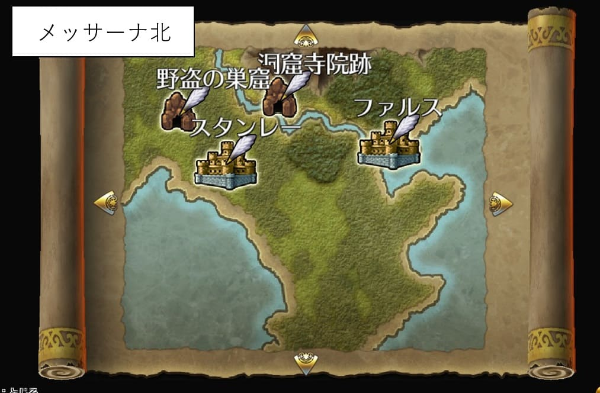
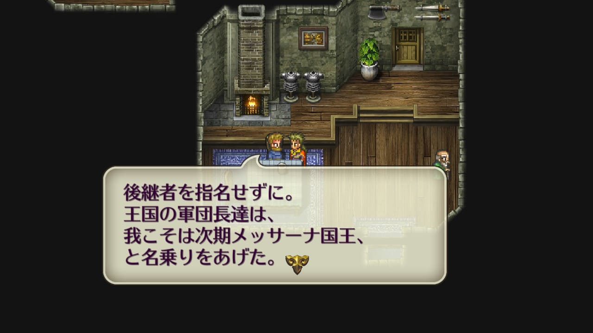
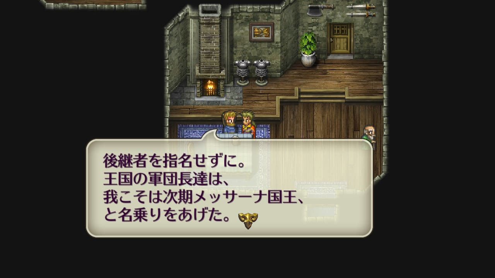
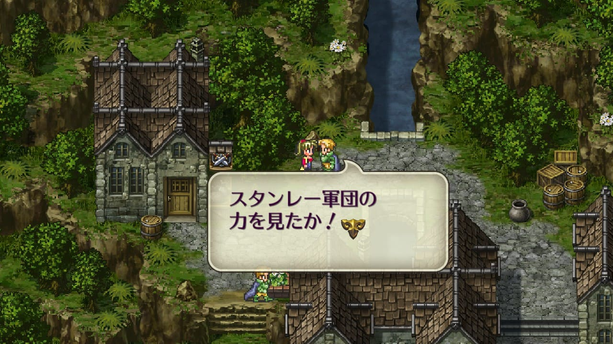

ルートヴィッヒとマクシムス
ルートヴィッヒとマクシムス
ロマサガ3の物語の主軸は宿命の子ですが、それと別に現世で暗躍している人物が数名います。ルートヴィッヒとマクシムスとゴドウィンです。
ここではルートヴィッヒとマクシムスについて触れます。ゴドウィンについてはこちらを見てみてください。
マクシムスは神王の塔で登場するので覚えている方も多いでしょう。聖王遺物とモンスターを使って世界征服を目論んでいる人物です。

一方、ルートヴィッヒは殆ど登場しないのでよく覚えていないという方も多いのではないでしょうか。
ゲーム中で明言はされていませんが、ルートヴィッヒとマクシムスは協力関係にあります。ピドナの神王教団でのマクシムスの演説の場にルートヴィッヒが顔を出していたり（ゲーム中でルートヴィッヒが登場するのはここだけ）、
ロマサガRSでは、マクシムスとルートヴィッヒは仲が良いという事が明言されています。以下画像の左がルートヴィッヒで右がマクシムス。
※画像はロマサガRSポルカ編第1章、「聖塔ランスの娘～聖王～後編」より。
また、舞台「ロマンシング サガ THE STAGE～ロアーヌが燃える日～」でもルートヴィッヒとマクシムスの協力関係が描かれています。この二人が協力関係になった背景を以下で見ていきます。
協力関係にあるルートヴィッヒとマクシムス
ロマサガ3の世界には「メッサーナ王国」という王国があります。聖王と聖王十二将の頁にも記載していますが、聖王の時代には聖王三傑の一人パウルスが国王だった国です。その領土はピドナを首都としてリブロフ、スタンレー、ファルスにまで渡ります。


ゲーム開始から遡ること15年前、メッサーナ王国の国王であるアルバート国王が急死し、空位の座となります。当時はミューズの父親であるクレメンスが王位に最も近い人物でした。しかしリブロフの軍団長だったルートヴィッヒも王位の座を狙っており、彼にとってクレメンスは邪魔な存在でした。
また、マクシムスにとってもクレメンスは邪魔な存在だったと考えられます。マクシムスは神王教団を利用して聖王遺物と魔王遺物を集めていますが、クレメンスはメッサーナ王国内での神王教徒の活動を禁じていたからです。
このように、ルートヴィッヒとマクシムスは共にクレメンスの事が邪魔な存在だという点で利害が一致しており、いつからか協力関係を築きます。ハマール湖の戦いとメッサーナの乱を見るとその関係が見えてきます。

ハマール湖の戦い
ゲーム開始から10年前に勃発したハマール湖の戦いでは、ゲッシア王朝（ハリードの出身地）が、マクシムスが所属する神王教団に襲撃されました。追い詰められたハリードはルートヴィッヒにファティーマ姫を任せますが、ファティーマ姫はこの後行方不明になってしまいます。
画像はロマサガ3リマスターの追加コンテンツのもの。

舞台「ロマンシング サガ THE STAGE～ロアーヌが燃える日～」では、この後、ルートヴィッヒはファティーマを神王教団に差し出すことで教団と関係を築いたとされています。結果、ファティーマ姫は行方不明。ルートヴィッヒは神王教団という強力な後ろ盾を得ます。
また、マクシムスはピドナの工房にある聖王の槍を手に入れるために、ルートヴィッヒと手を組んでいることもここで明らかになります。マクシムスは神王教団を利用する目的で教団に所属しているため、神王教団の活動を禁じているクレメンスが王になるのは都合が悪いのです。
ルートヴィッヒはピドナを手中にするため、マクシムスは聖王の槍を手に入れるために、お互いにとって邪魔なクレメンスの排除を目的として10年前から既に協力関係にあったということがわかります。
メッサーナの乱
15年前のアルバート国王急死以降、空位となった国王の座を巡って、10年間に渡る内乱（メッサーナの乱）が起こります。先にも述べましたが、王位に最も近かったのは、近衛軍団を指揮していたクラウディウス家のクレメンス。ミューズの父親です。
因みにクラウディウス家はピドナ王宮の隣にあったようで、このことからも王位に相当近い位置にいたことがうかがい知れます。
これにリブロフの軍団長であるルートヴィッヒが挑戦してきました。
このあたりの話はトーマス主人公で始めた場合のイベントの会話で知ることができます。
 


争いの末、クレメンスはルートヴィッヒに勝利するが、神王教徒に暗殺されてしまいます。ここで神王教団が出てくるのは、ハマール湖の戦いでルートヴィッヒと神王教団が協力関係を築いたからですよね。

結果的にクレメンスが指揮していた近衛軍団はルートヴィッヒに降伏し、ピドナは彼の手に落ちます。


この際、ピドナの工房にある聖王の槍が何者かに盗まれます。ゲームをプレイするとわかるのですが、結局盗んだのはジャッカル（＝マクシムス）でした（詳細は聖王遺物と魔王遺物の頁参照）。


表ではルートヴィッヒがクレメンスに争いを仕掛け、裏では神王教団がクレメンスを暗殺。その結果、ルートヴィッヒはピドナを手中に収め、どさくさ紛れてマクシムスがピドナの工房から聖王の槍を奪取。ルートヴィッヒとマクシムスの計画通りにことが進んでいます。
また、ゲーム中ではピドナ王宮の左隣が神王教団のピドナ拠点になっていますが、クレメンスが存命していたらありえなかったでしょう。ルートヴィッヒがピドナを手中にしたことで神王教団はピドナで活動しやすくなり、神王教徒も増えました。
これは聖王遺物の一つである銀の手も狙っているマクシムスにとってかなり都合がよかったはずです。ピドナで活動しやすくなった結果、夢魔の秘薬を使ってミューズを深い眠りにつかせる事に成功します。
因みに、聖王遺物の一つであるマスカレイドも、ゴドウィンの反乱の直後に神王教団に盗まれており、争いの混乱に乗じて盗むという手口が類似しています。ゴドウィンの反乱自体も、マスカレイドを盗むためにマクシムスが裏で糸を引いていた可能性も考えられます。
このように、ゲーム内情報だけだとわかりにくいですが、舞台の情報やロマサガRSの情報も合わせるとルートヴィッヒとマクシムスは協力関係にあり、実はゲーム内のイベントにも深くかかわっているということがわかります。
ファルスとスタンレー
これはちょっと余談ですが、メッサーナの王位を狙っているのはルートヴィッヒだけではありません。ファルスとスタンレーも狙っています。練磨の書(P206)によると、『ファルスとスタンレーは空位のままの国位をめぐる紛争で軍事一色に染まっている。』とある。
ファルスの兵士が「ルートヴィッヒの野望を阻止せねばならん！」と言っているのは、つまりはルートヴィッヒに王位は渡さんぞ！ってことですね。

ファルス（スタンレー）の酒場の店主は「スタンレー（ファルス）と争ってもルートヴィッヒが喜ぶだけですよ。」と言っていて、実際、ファルスとスタンレーの戦いにファルスが勝っても町の人は「戦いは終わったが、何も変わらない」と言っている。


ファルスとスタンレーが戦ってもお互いが疲弊するだけで、ルートヴィッヒにとっては、王位を狙うライバルが勝手に削り合ってるだけという状況なのでしょう。だから「ルートヴィッヒが喜ぶだけ」なんでしょうね（まあ私の勝手な妄想ですが）。
因みにスタンレーが勝った場合、スタンレーの兵士は「スタンレー軍団の力を見たか！」と言います。というか、これしか喋りません。ファルスと比べると、なんのために戦っているのかがあまり見えていないような発言に見えてしまいますね。

参考
- サガ用語辞典 Wiki 【ルートヴィッヒ】
- サガ用語辞典 Wiki 【ハマール湖の戦い】
- Neetlife Game ミューズを探せ
- Neetlife Game ミューズの悪夢
- Neetlife Game シャール
- Neetlife Game ルートヴィッヒ
- Neetlife Game ハリードとルートヴィッヒ